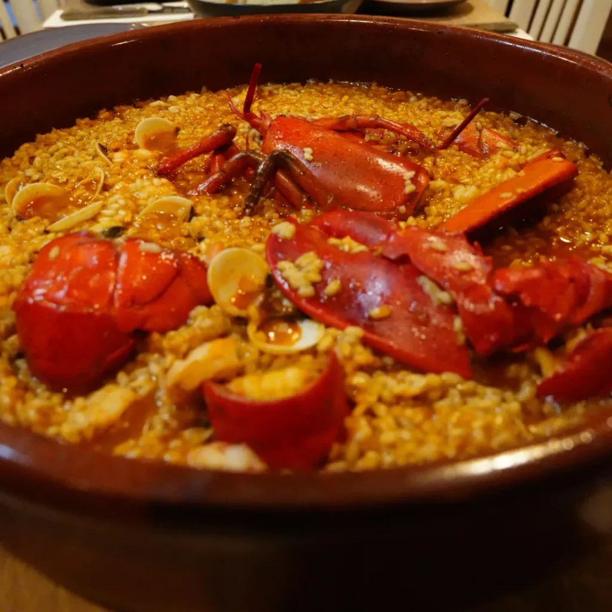
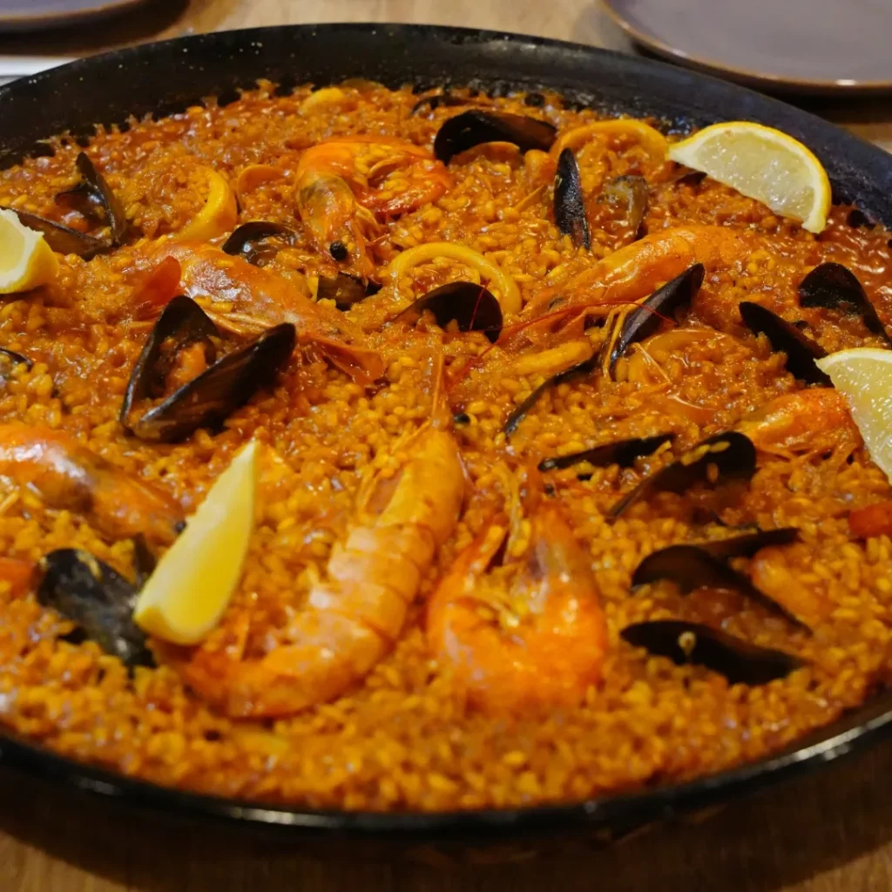

TU PRÓXIMA MESA, EN ALUCHE
Mala pata.
Buena mesa.
De los que vienen a picar algo
y se quedan a la sobremesa.
Un arroz para compartir, tu plato de siempre y la mejor compañía. El buen plan está en el barrio.


EL CENTRO DE LA MESA
Hay planes que
se hacen a fuego lento.
Negro, a banda, con bogavante, de verduras… Elige tu arroz, reúne a los tuyos y deja sitio para repetir.
Los arroces se preparan por encargo.
Precios por persona. Llámanos para consultar disponibilidad y organizar tu visita.
NUESTRAS CARNES
Para los que vienen
con buen apetito.
Entrecot, carrillera o un cachopo para compartir. Y para una ocasión especial, cordero y cochinillo asado por encargo.
Elige tu plato, prepara tu plan.
Consulta las carnes de nuestra carta y llámanos para encargar los asados.

NOS VEMOS EN EL BARRIO
Tu mesa está
en Aluche.
Calle Quero, 61
28024 · Madrid
LO QUE DICE EL BARRIO
Valóranos
1.971 reseñas en Google
Ver opiniones en GoogleConsultado el 25/09/2026 · La puntuación puede cambiar.
¿QUÉ TAL LO HAS PASADO?
Déjanos tus estrellas.
Tu opinión nos ayuda a seguir mejorando y a que más vecinos nos conozcan.
Escribir reseña en GoogleConfirma tu puntuación y publica tu reseña en Google con tu cuenta. La selección aquí no envía una valoración.